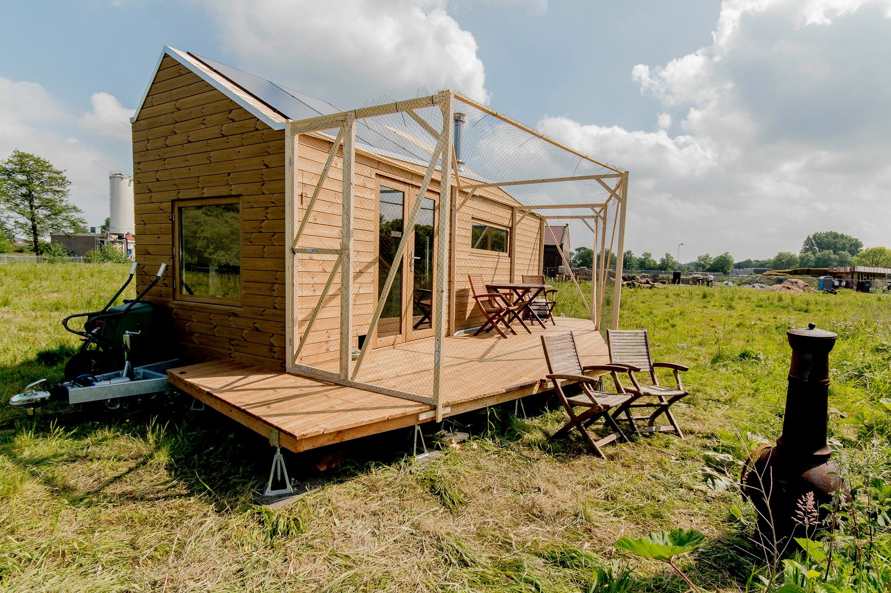
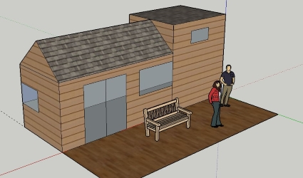
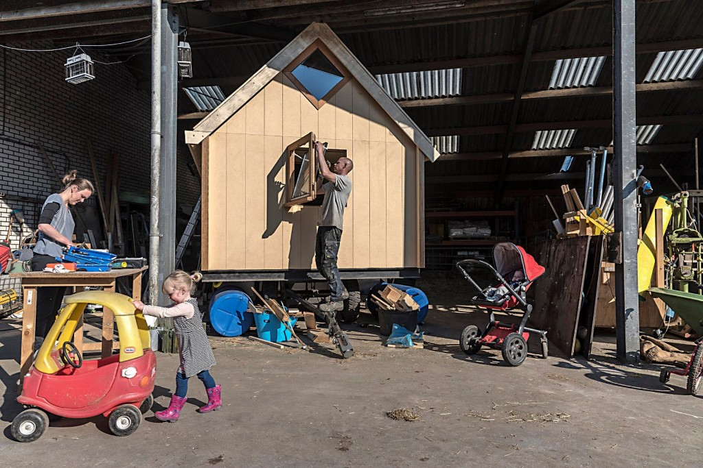

The Tiny house movement has several communities and groups all over the globe. They have facebook groups and even a website in the Netherlands that contains a group of people that made a website dedicated to Tiny houses and showing their team. Their team consist of a few people that are either project leaders or maintain the forums on the site. They share their experiences on owning a tiny house and give information. Here are a few of the people of the dutch tiny house community and their stories:
Marjolein Jonker is the project leader of the Tiny house movement in the Netherlands. She owns a tiny house herself and has a website (blog) about her experience how she started building everything. Her mission is to get the Netherlands more informed about the movement of tiny houses and what its like living here. She also gives a course on tiny houses how to get your own ( which is a paid course). And educates people about tiny houses in several medias. Here is one of her tiny houses:
Natasja Oosterloo is someone who is planning to own a tiny house and is also part of the dutch community. The interesting thing about her and her husband is that they are both very long in hight (1.90m and 1.85m) , and want to live in a tiny house. The average space in their tiny house is 24 square meters(average for tiny house is 30 square meters to 50 but not more than that), so that’s not much especially if you have that height.
She also believes that people can live with less too, since a tiny house is not big you cant have much furniture. And lets not forget that if you own a tiny house you actually have no mortgages since a tiny house is tax free. Below you see a picture of their in progress tiny house sketch.
Karin Prins has a tiny house and a daughter and a son so it was interesting to see how she lives with her husband and children in that space. Their dream was originally to own a bed and breakfast in France. So they tried to live in a tiny house that was movable so its one step closer to immigrating since you don’t leave much behind in terms of possession as a normal house.
She also explains how she got into making her tiny house and getting premmission to build on land in a specific province. Their tiny house is self build. So she explains that before you start this process you have to show the government that you are looking for a spot to show that you are serious about this. So that when there is a spot free you can immediately go there. She also gave tips on what to do in terms of giving a good impression. So for example if you have a blueprint or already a tiny house which is in progress show it to the government and show them a plan with the added value of your tiny house. And don’t forget to find people that are pro tiny house in that area and find support from others that can also help. They paid for the materials and their tiny house by already having savings and getting crowd funding. Here is a picture of their tiny house.
